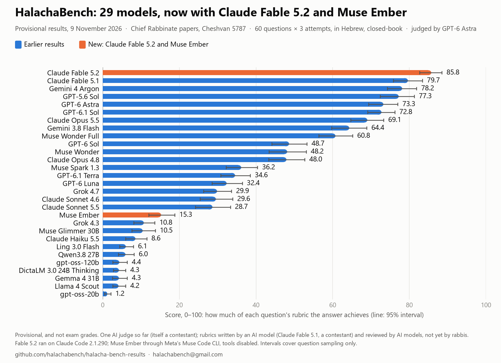

The project
What HalachaBench is
HalachaBench is an independent project that tests how well AI models answer real questions from the semicha (rabbinic ordination) exams of the Chief Rabbinate of Israel. It is not connected to, or endorsed by, the Chief Rabbinate or by any model developer.
The v1 results published here cover 27 models on the test set: the 60 questions of five papers from the Cheshvan 5787 sitting (Niddah, Chuppah v'Kiddushin, Mitzvot HaTeluyot BaAretz, Mikvaot, Tefillah u'Brachot). Each model answered every question three times, in Hebrew, closed-book, and one judge (GPT-6 Astra) graded every answer against sealed rubrics.
Results
Headline results (provisional)

| # | Model | Score |
|---|---|---|
| 1 | Claude Fable 5.1 | 79.7 |
| 2 | Gemini 4 Argon | 78.2 |
| 3 | GPT-5.6 Sol | 77.3 |
| 4 | GPT-6 Astra | 73.3 |
| 5 | GPT-6.1 Sol | 72.8 |
| 6 | Claude Opus 5.5 | 69.1 |
| 7 | Gemini 3.8 Flash | 64.4 |
| 8 | Muse Wonder Full | 60.8 |
The top three are not clearly apart from one another on a question-by-question comparison. The full table of all 27 models, with 95% intervals and per-pair comparisons, is in the README.
Inside the repo
What is in the repository
| Path | What it is |
|---|---|
README.md | The main document: full results table for all 27 models, the methodology (questions, answering conditions, rubrics, grading, pre-registration), detailed checks on the Grok results, caveats, and a Hebrew summary. |
results.png | Bar chart of the 27 models' scores with 95% intervals (shown above). |
bundle/criteria.json | Every rubric criterion's id, points, axis and status for all 96 sealed questions (60 test + 36 development), without criterion text. |
bundle/commitments.json, bundle/seal-log.jsonl | Salted cryptographic commitments to all 96 sealed rubrics and the hash-chained log that sealed them on 29 October 2026, before any test answer was graded. |
bundle/prereg.json | SHA-256 of each pre-registration record (questions, exam rules, model list, judge protocol, analysis code). |
bundle/scores.json | The judge's mean score per model. |
bundle/withheld.json | SHA-256 of the per-answer files (each answer's commitment, every verdict, the 244 repeat gradings), withheld until the rabbi review round closes so blind grading stays blind. |
bundle/MANIFEST.json | SHA-256 of every file, so any later change to the published data can be detected. |
Note what is not here: the exam questions themselves (the Chief Rabbinate's own, published on gov.il), the rubric texts and answers (committed to by hash, to be published after the review round), and the runner/analysis code. Until the code, salts and withheld files are published, the bundle fixes the data against later change but cannot be used to recompute a score.
Caveats
What the authors themselves warn
- The judge, GPT-6 Astra, is also a contestant; the rubric writer, Claude Fable 5.1, placed first. A second judge (Claude Opus 5.5) and rabbi grading are planned.
- Some models were added after the first publication, each by a recorded pre-registration amendment.
- Not contamination-free: Rabbinate questions often recur and these 60 have not yet been checked for repeats.
- Five more pre-registered runs are still to be added, whatever they score.
Contact
Get involved
The authors invite review and collaboration (rubric review, grading answers, expanding the test): halachabench@gmail.com. Original repository: github.com/HalachaBench/halacha-bench-results.